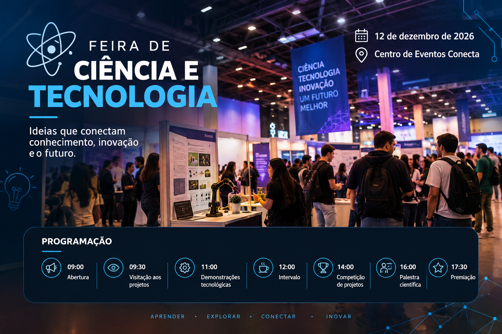
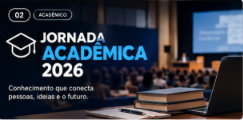
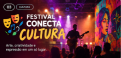
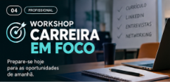
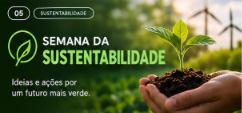
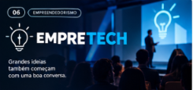

Encontre eventos, experiências e oportunidades para aprender,
conectar-se e descobrir novas ideias.
Eventos em destaque
Confira os próximos eventos do PortalEventos.
Conecta Future 2026
Categoria: Tecnologia

O Conecta Future 2026 reúne tecnologia, inovação e novas ideias
para discutir como o futuro está transformando o mercado de
trabalho. Um espaço para aprender sobre tendências, inteligência
artificial, inovação e criar conexões com profissionais e outros
participantes.
Jornada Acadêmica 2026
Categoria: Acadêmico

A Jornada Acadêmica 2026 é um espaço dedicado à troca de
conhecimentos, experiências e ideias entre estudantes, professores
e pesquisadores. O evento busca aproximar a comunidade acadêmica
de diferentes áreas, incentivando a pesquisa, a inovação e o
compartilhamento de projetos desenvolvidos ao longo da vida
universitária.
Festival Conecta Cultura
Categoria: Cultura

O Festival Conecta Cultura celebra a diversidade artística e
cultural, reunindo diferentes formas de expressão em um único
espaço. O evento foi pensado para aproximar o público de artistas
locais e proporcionar uma experiência que combina arte,
criatividade, música e entretenimento.
Workshop Carreira em Foco
Categoria: Profissional

O Workshop Carreira em Foco foi desenvolvido para estudantes e
profissionais que desejam se preparar melhor para os desafios do
mercado de trabalho. O evento apresenta estratégias práticas para
quem está buscando sua primeira oportunidade, deseja mudar de área
ou pretende melhorar sua presença profissional.
Semana da Sustentabilidade
Categoria: Sustentabilidade

A Semana da Sustentabilidade reúne conhecimento, conscientização
e iniciativas voltadas para a construção de um futuro mais
sustentável. O evento propõe discussões sobre os desafios
ambientais atuais e apresenta diferentes possibilidades para
tornar cidades, comunidades e hábitos cotidianos mais responsáveis
com o meio ambiente.
Empretech
Categoria: Empreendedorismo

O Empretech é um encontro voltado para pessoas que possuem ideias,
projetos ou interesse em transformar oportunidades em negócios.
O evento reúne conhecimentos sobre empreendedorismo, inovação e
planejamento, criando um ambiente para aprender com experiências
reais e desenvolver novas possibilidades.